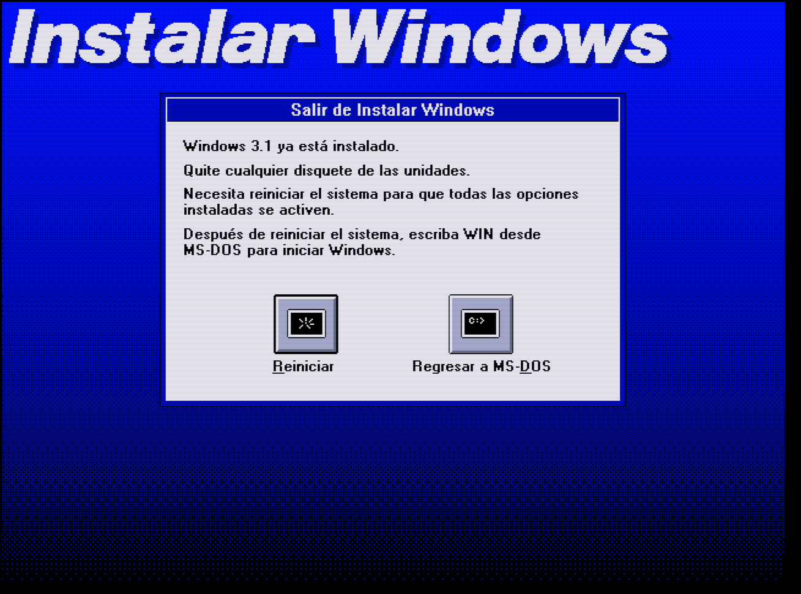
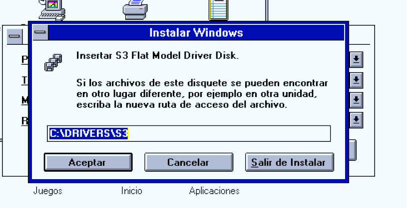
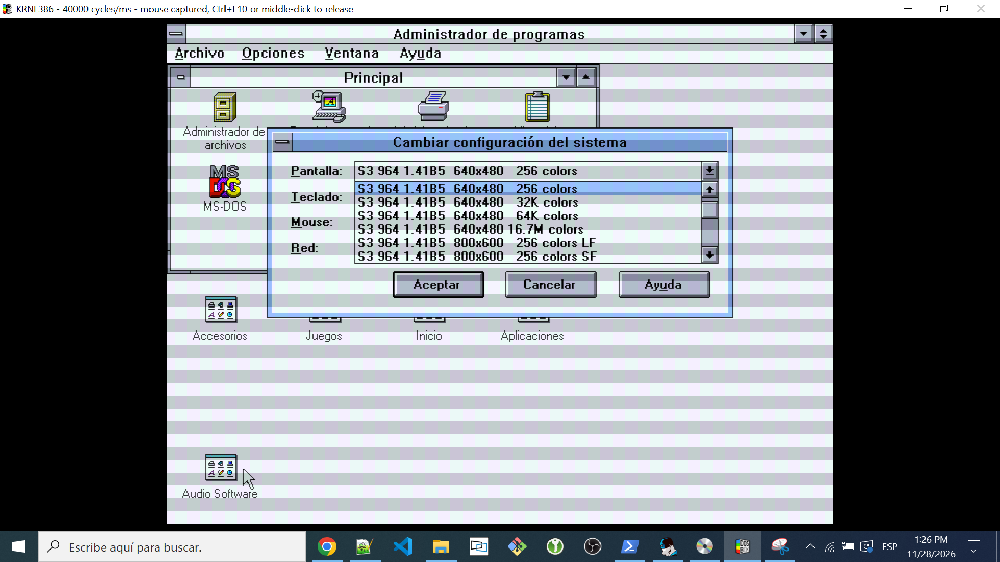
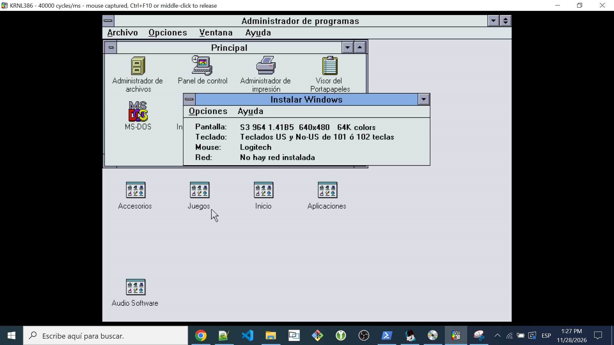
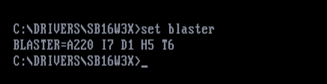
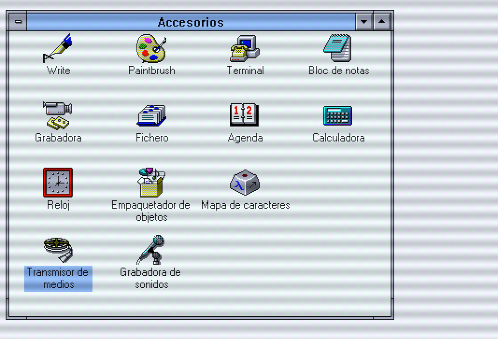
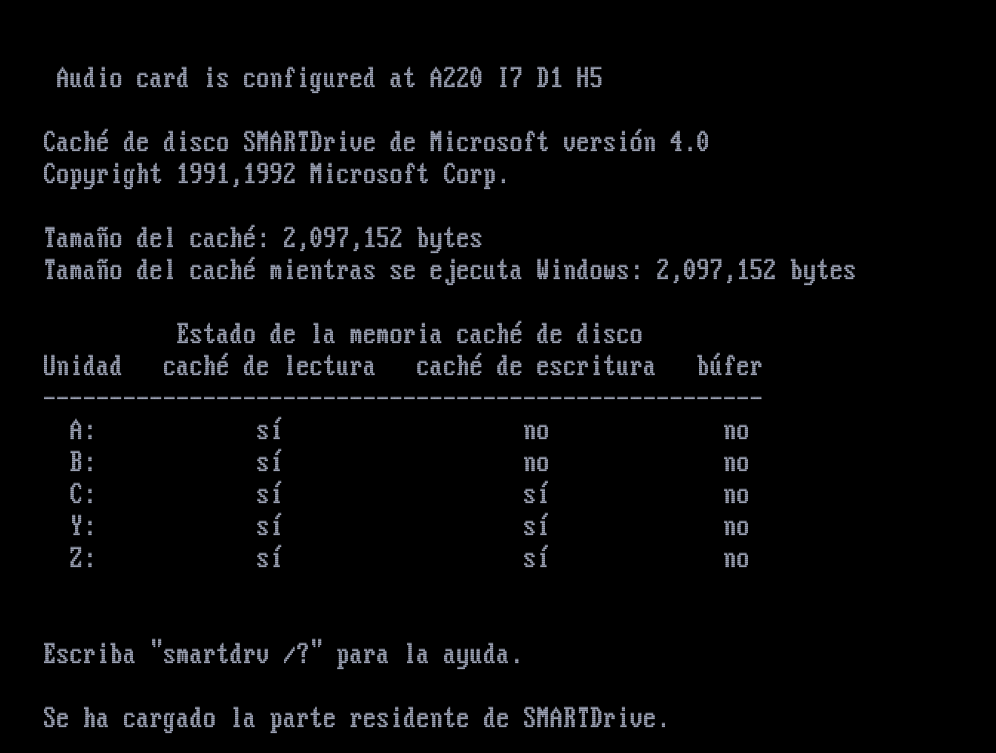
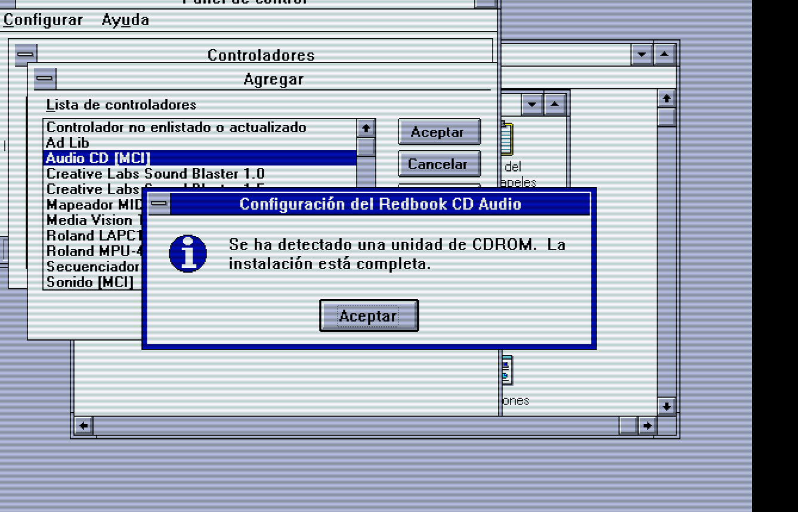

Esta guía explica cómo preparar una base reutilizable de Windows 3.1 en español dentro de DOSBox Staging 0.83.0, con gráficos SVGA, sonido digital y MIDI, y cómo convertirla en un entorno portable para aplicaciones y videojuegos de Windows 3.x. No depende de ningún juego concreto ni requiere instalarlo para completar la preparación básica.
El procedimiento reúne las comprobaciones de laboratorio realizadas los días 15 y 28 de noviembre de 2026 en Windows 10 Pro 22H2 x64. Las capturas son evidencias reales de esos trabajos. La instalación de Windows y los controladores, las pruebas de audio y vídeo y el traslado de los entornos se realizaron en casos reales; la receta unificada es una síntesis documental y todavía no se ha repetido íntegramente desde una base virgen en una única sesión independiente.
1. Material necesario y alcance
| Componente | Versión o requisito | Finalidad |
|---|---|---|
| Sistema anfitrión | Windows 10 Pro 22H2 x64 | Entorno probado |
| DOSBox Staging | 0.83.0, portable Windows x64 (7b400 en la segunda sesión) | Emulador |
| Microsoft Windows | 3.1 en español, siete disquetes | Sistema invitado de 16 bits |
| S3 Vision 964 | v1.41B5 (s3-964-141B5.ZIP) | Controlador de vídeo SVGA |
| Creative Sound Blaster 16 | SB16W3X.ZIP | Controladores y utilidades DOS y Windows 3.x |
| SmartDrive | 4.0, presente en la base probada | Caché de disco |
| Audio CD [MCI] | Controlador de Windows 3.1 | Opcional, para aplicaciones que usan pistas CDDA |
| QuickTime for Windows | 2.1.2 de 16 bits | Opcional, para aplicaciones multimedia compatibles |
Obtén DOSBox Staging del sitio oficial y consulta los enlaces de los controladores S3 y Creative en el manual de Windows 3.1 de DOSBox Staging 0.83. Conserva los paquetes y sus versiones para poder reproducir la preparación. Debes disponer legítimamente de los medios de instalación de Windows y de los programas que vayas a ejecutar. PC Game Archive no distribuye esos medios ni los instaladores comerciales.
No instales Windows 3.1 ni QuickTime antiguos directamente en el Windows anfitrión. Mantén el entorno invitado aislado de Internet y analiza los paquetes de terceros antes de utilizarlos. Las versiones de 16 bits se instalan exclusivamente dentro del entorno emulado.
2. Prepara DOSBox Staging y el disco C: emulado
Crea una carpeta Windows31-Base y descomprime el paquete portable completo en su interior. No extraigas únicamente dosbox.exe: conserva sus DLL, recursos y demás archivos auxiliares. Crea drives\c junto al ejecutable. En esta versión de DOSBox Staging, con esa carpeta como directorio de trabajo, drives\c se monta automáticamente como unidad C: invitada.
Windows31-Base/
dosbox.exe
dosbox.conf
resources/
drives/
c/
win31-disks/win31-disks es una carpeta temporal para tus siete imágenes de instalación; no formará parte del entorno final salvo que quieras mantener medios de trabajo legítimos para añadir componentes. No utilices imágenes maestras directamente. El resto de archivos del paquete del emulador se mantiene aunque no aparezca en el esquema.
Crea dosbox.conf junto a dosbox.exe con este perfil inicial. Los parámetros proceden de la configuración funcional final del laboratorio, adaptados para una base que aún no tiene Windows ni aplicaciones instaladas. El perfil mantiene 32 MB y 40.000 ciclos/ms en modo real y protegido; no son requisitos universales de todos los títulos.
[sdl]
fullscreen = false
[dosbox]
machine = svga_s3
memsize = 32
[cpu]
core = normal
cputype = auto
cpu_cycles = 40000
cpu_cycles_protected = 40000
cpu_throttle = false
[sblaster]
sbtype = sb16
sbbase = 220
irq = 7
dma = 1
hdma = 5
[midi]
mpu401 = intelligent
mididevice = portDesde PowerShell, situado en Windows31-Base, inicia el emulador:
.\dosbox.exe --noprimaryconf --conf dosbox.conf--noprimaryconf impide cargar la configuración global de DOSBox del usuario; el fichero local se conserva con la carpeta. Comprueba el log: debe identificar el fichero local, S3 Trio64 (4 MB de VRAM en la prueba) y Sound Blaster 16 en el puerto 220h, IRQ 7, DMA 1 y DMA alta 5. No montes C: una segunda vez si ya aparece como unidad automática.
Los 32 MB generaron un aviso de memoria superior a 31 MB en DOSBox, pero se mantuvieron por el funcionamiento satisfactorio con Windows 3.1. El valor mididevice = port abre el dispositivo MIDI Win32 disponible en el anfitrión en el equipo probado. No asegura que otro ordenador disponga del mismo sintetizador.
3. Instala Windows 3.1 desde los disquetes
En win31-disks, coloca las siete imágenes de instalación, que en este ejemplo se llaman disk01.img a disk07.img. Adapta los nombres si los tuyos difieren. En la consola DOS emulada monta las imágenes en el orden correcto y ejecuta el instalador español:
MOUNT A "win31-disks\disk01.img" "win31-disks\disk02.img" "win31-disks\disk03.img" "win31-disks\disk04.img" "win31-disks\disk05.img" "win31-disks\disk06.img" "win31-disks\disk07.img" -t floppy
A:\INSTALAR.EXEEn los medios españoles examinados el ejecutable era INSTALAR.EXE; no supongas que todos los idiomas utilizan ese nombre. Instala el sistema en C:\WINDOWS. Cuando el asistente solicite el siguiente disquete, pulsa Ctrl + F4 para avanzar a la siguiente imagen y confirma el mensaje. Conserva los disquetes y su orden fuera de la copia base para futuras ampliaciones.

Al terminar elige Regresar a MS-DOS. Puedes cerrar el emulador y volver a abrirlo con el mismo fichero local para retirar los disquetes montados. Arranca Windows desde la consola invitada:
C:
CD \WINDOWS
WIN
Si Windows abre el Administrador de programas, sal de Windows de forma normal, cierra DOSBox y conserva una copia de la carpeta drives\c fuera de la base antes de cambiar controladores. Esta copia permite revertir la instalación sin volver a empezar.
4. Instala el controlador gráfico S3 Vision 964
El emulador está configurado con machine = svga_s3. El controlador S3 Vision 964 v1.41B5 permite utilizar modos de 256 y 64K colores, en lugar de limitarse a la VGA estándar.
- Con DOSBox cerrado, descomprime el paquete del controlador en
drives\c\DRIVERS\S3. Comprueba que contieneOEMSETUP.INF. - Inicia DOSBox y Windows. En Principal → Instalar Windows, abre Opciones → Cambiar configuración del sistema.
- En la lista Pantalla, elige Otro e indica
C:\DRIVERS\S3. - Selecciona el modo S3 de 640 × 480 y 256 colores para la base inicial. Si Windows solicita el disco del controlador S3, vuelve a indicar
C:\DRIVERS\S3. - Finaliza el asistente y reinicia Windows para aplicar el controlador.


Selección de profundidad de color
No existe un modo óptimo para todos los juegos. Mantén 640 × 480 como punto de partida y consulta los requisitos de la aplicación antes de cambiar la profundidad.
| Modo | Cuándo elegirlo |
|---|---|
| 640 × 480, 256 colores | Aplicaciones y juegos con paletas de 8 bits |
| 640 × 480, 64K colores (16 bits) | Aplicaciones multimedia que recomiendan color de 15/16 bits |
Para cambiar entre ambos, utiliza de nuevo Principal → Instalar Windows → Opciones → Cambiar configuración del sistema y selecciona el modo S3 correspondiente. Reinicia Windows y confirma el modo. En el log, el modo de 16 bits se identificó como VESA 640 × 480, 16-bit high colour, 111h.


La profundidad gráfica del invitado y el tamaño de la imagen en el monitor anfitrión son decisiones distintas. No aumentes la resolución del invitado solo para llenar una pantalla moderna.
5. Instala Sound Blaster 16 para DOS y Windows
Descomprime SB16W3X.ZIP en drives\c\DRIVERS\SB16W3X. Sal de Windows si está abierto. Desde el DOS emulado comprueba el hardware y ejecuta el instalador de Creative:
SET BLASTER
C:
CD \DRIVERS\SB16W3X
INSTALL.EXE
Si aparece el tipo de instalación, selecciona Full Installation. Configura C:\SB16 como destino del software y C:\ como unidad de arranque. En Microsoft Windows 3.1 path indica expresamente C:\WINDOWS.
No dejes este último campo en None: en el laboratorio esa selección dejó los controladores en C:\SB16\WINDRV sin integrarlos en Windows. El valor de IRQ que proponía el instalador era 5; se corrigió a 7 para que coincidiera con el emulador.
| Parámetro de Creative | Valor de la base |
|---|---|
| Base I/O address | 220h |
| MIDI Port address | 330h |
| Interrupt setting (IRQ) | 7 |
| Low DMA setting | 1 |
| High DMA setting | 5 |
La configuración debe coincidir con SET BLASTER y con [sblaster] de dosbox.conf, no necesariamente con los valores predeterminados del instalador. Verifica que se ha creado C:\WINDOWS\SYSTEM\SB16SND.DRV.
Valida el audio digital
Arranca Windows y abre Accesorios → Transmisor de medios → Dispositivo → Sonido. Abre C:\WINDOWS\TADA.WAV y pulsa reproducción. Un WAV audible confirma el funcionamiento de la salida digital de Windows. Este ensayo no valida por sí mismo MIDI ni pistas de audio CDDA, que se comprueban por separado.

MIDI
La base emula OPL3 y una interfaz MPU-401 inteligente. El controlador Creative Music Synthesizer y SB16 MIDI Out representan rutas distintas; el segundo utiliza la salida MIDI del anfitrión cuando DOSBox está configurado con mididevice = port. Selecciona el controlador que corresponda al programa y compara sus pruebas musicales, si las ofrece. No confundas la prueba MIDI con el ensayo de WAV ni con el audio de CD.
El funcionamiento de la salida Win32 se confirmó en el equipo de laboratorio. No se ha validado una configuración con SoundFont incorporada ni la equivalencia entre sintetizadores de distintos equipos; esa dependencia se debe documentar en cada guía que utilice MIDI.
6. Inicializa Creative y SmartDrive al arrancar
Comprueba el C:\AUTOEXEC.BAT creado por el instalador de Creative. Antes de editarlo, guarda una copia. En la base reutilizada del laboratorio contenía lo siguiente (transcripción de la sesión; ajusta las rutas si tu instalación difiere):
SET SOUND=C:\SB16
SET BLASTER=A220 I7 D1 H5 P330 T6
REM ** SET BLASTER=A220 I5 D1 H5 P330 T6
SET MIDI=SYNTH:1 MAP:E
C:\SB16\DIAGNOSE /S
C:\SB16\MIXERSET /P /Q
C:\WINDOWS\SMARTDRV.EXE
PATH C:\WINDOWS;
SET TEMP=C:\WINDOWS\TEMPAntes de utilizar este fichero, verifica que DIAGNOSE.EXE, MIXERSET.EXE, SMARTDRV.EXE y el directorio C:\WINDOWS\TEMP existen. Si Creative ha generado otras líneas necesarias para tu instalación, consérvalas. La variable BLASTER de este ejemplo es coherente con la tarjeta emulada. La línea comentada de IRQ 5 no se ejecuta. No es necesario crear un segundo AUTOEXEC dentro de la unidad C:.
Añade al final del fichero de configuración local una única sección [autoexec]. Esta sección de DOSBox se ejecuta al iniciar el emulador, mientras que AUTOEXEC.BAT es un archivo del DOS invitado:
[autoexec]
@echo off
c:
call AUTOEXEC.BATNo incluyas esa llamada antes de que exista el fichero invitado. Cierra DOSBox y arráncalo de nuevo. Comprueba que Creative inicializa el hardware y que SmartDrive arranca sin errores. Puedes ejecutar SMARTDRV desde DOS para consultar su estado; en la sesión documentada se observó SmartDrive 4.0 con una caché de 2 MB. No se confirmó caché activa para el CD-ROM, por lo que no se presupone en esta receta.

7. Monta soportes ópticos cuando los necesites
Crea un entorno por aplicación como copia de la base y coloca las imágenes de trabajo fuera del directorio emulado drives\c, por ejemplo en una carpeta hermana CD. El comando moderno MOUNT de DOSBox Staging 0.83 permite montar imágenes sin necesitar la unidad física ni una aplicación de montaje del anfitrión.
CD-ROM de datos (ISO)
Desde la consola DOS, con las imágenes en una carpeta CD situada al mismo nivel que la carpeta del emulador:
MOUNT D "..\CD\DISCO1.ISO" "..\CD\DISCO2.ISO"
DIR D:\Los nombres son ejemplos: utiliza los de tus imágenes de trabajo verificadas. Para un solo disco, indica únicamente su ruta. Pulsa Ctrl + F4 para alternar entre las imágenes montadas en D: y usa DIR D:\ para comprobar el cambio. El primer disco debe estar montado cuando arranque el instalador o el juego. No modifiques los másteres de preservación.
CD-ROM de modo mixto (BIN/CUE)
Cuando una edición contiene pistas de audio CDDA, conserva juntos los archivos BIN y CUE y monta el CUE, que describe la estructura de pistas. Una ISO de la pista de datos no conserva la música CDDA.
MOUNT D "..\CD\DISCO.CUE"
DIR D:\En los dos casos puedes incorporar el montaje a [autoexec] antes de call AUTOEXEC.BAT y de iniciar Windows, para que la unidad D: esté disponible desde el principio. El intercambio con Ctrl + F4 se probó tanto en DOS como durante una aplicación de Windows 3.1 con dos discos.
Componente opcional: Audio CD [MCI]
No es necesario para los CD-ROM que contienen únicamente archivos de datos o vídeos MOV. Sí puede ser imprescindible cuando una aplicación accede a pistas CDDA mediante MCI de Windows.
Con la imagen BIN/CUE montada en D:, sal de Windows y monta el cuarto disquete de instalación de Windows 3.1 en A:. Si conservaste los disquetes fuera de la base, copia temporalmente el cuarto a win31-disks\disk04.img junto a dosbox.exe de esta copia de trabajo, o adapta la ruta al lugar donde esté guardado. Si aún hay un disquete montado, reinicia DOSBox para liberar A: y vuelve a montar el CUE.
MOUNT A "win31-disks\disk04.img" -t floppy
C:
CD \WINDOWS
WINEn Windows abre Principal → Panel de control → Controladores → Agregar… → Audio CD [MCI]. Cuando solicite el disquete, indica A:\. El resultado esperado es un mensaje confirmando la detección de una unidad de CD-ROM. Reinicia Windows si lo solicita. La validación funcional debe incluir la reproducción de una pista CDDA; la presencia de la unidad no basta para confirmar el sonido.

El controlador y la reproducción de música CDDA se comprobaron en el laboratorio con una edición de modo mixto. Si tu base no necesita CDDA, deja este componente como ampliación opcional de una copia de trabajo.
8. Componente opcional: QuickTime 2.1.2 de 16 bits
Algunas aplicaciones Windows 3.x necesitan QuickTime para reproducir vídeo digital. No es un requisito del entorno base. Para ampliar esta instalación, sigue la guía técnica de instalación y configuración de QuickTime 2.1.2, que incluye copia de seguridad, identificación del instalador, comprobación de versión y diagnóstico de reproducción MOV. En el laboratorio, la actualización desde 2.03 resolvió un fallo de apertura de vídeos. Mantén una copia de la base sin esta ampliación para aplicaciones que no la necesiten.
9. Consolida la base y prepara copias por aplicación
La base no debe contener juegos instalados ni depender de sus CD-ROM. Una vez verificados Windows, los controladores y el audio digital, cierra DOSBox y guarda una copia de la carpeta completa. Puedes mantener dos perfiles de trabajo: uno mínimo con Windows, S3 y Creative, y otro con los componentes multimedia opcionales que necesites. Documenta qué modos gráficos y componentes has verificado en cada copia.
Ejemplo de estructura de un nuevo paquete:
Aplicacion-Portable/
Iniciar.bat
CD/
DISCO1.ISO
DISCO2.ISO
dosbox/
dosbox.exe
dosbox.conf
resources/
drives/
c/
AUTOEXEC.BAT
WINDOWS/
SB16/
APLICACION/La carpeta APLICACION es un ejemplo del directorio creado por el instalador legítimo del programa. Mantén todos los demás archivos de DOSBox. La copia de trabajo es independiente de la base y de los másteres. No publiques la carpeta de Windows ni los archivos de las aplicaciones comerciales.
Para iniciar únicamente Windows desde la copia base, añade win después de call AUTOEXEC.BAT y, si deseas cerrar DOSBox al salir de Windows, exit a continuación. No incluyas un montaje de CD que no exista en esa base.
Arranque automático de una aplicación instalada
Primero instala la aplicación desde sus propios medios y comprueba su funcionamiento manual. En el Administrador de programas selecciona su icono y abre Archivo → Propiedades. Anota la línea de comando, el directorio de trabajo y los argumentos, si los hay.
En la copia de trabajo, puedes adaptar [autoexec] con las rutas de esa aplicación. Por ejemplo, si el ejecutable estuviera en C:\APLICACION\PROGRAMA.EXE y utilizara dos CD ISO:
[autoexec]
@echo off
mount d "..\CD\DISCO1.ISO" "..\CD\DISCO2.ISO"
c:
call AUTOEXEC.BAT
cd \APLICACION
win PROGRAMA.EXE
exitSustituye rutas, nombres y argumentos por los que corresponden a la aplicación instalada. Si no necesita CD, elimina la línea de montaje. win PROGRAMA.EXE inicia Windows y ejecuta el programa; si al cerrar la aplicación vuelve al Administrador de programas, DOSBox se cerrará cuando salgas de Windows, no al salir del programa. Esta modalidad se validó en la segunda sesión de laboratorio. En otra sesión se utilizó una alternativa: copiar el acceso del programa al grupo Inicio de Windows 3.1 y arrancar Windows normalmente. No combines ambas modalidades para evitar iniciar la aplicación dos veces.
Pantalla completa y proporciones
Después de validar la aplicación en ventana, activa fullscreen = true dentro de [sdl]. Alt + Intro permite alternar entre ventana y pantalla completa. Para preservar la relación de aspecto, no estires el contenido a 16:9: aspect = auto es la opción indicada para mantener las proporciones, mientras que aspect = stretch llena la pantalla y deforma la imagen en un monitor panorámico. En caso de modificar [render], revisa las opciones de la versión 0.83 en el manual de proporciones y escalado.
La presentación CRT adaptativa predeterminada puede añadir líneas de barrido. El escalado o filtro no cambia la resolución lógica de Windows ni constituye un ajuste de los vídeos originales.
Lanzador BAT portable
En la raíz del paquete de trabajo, junto a CD y dosbox, crea Iniciar.bat (con extensión BAT, no TXT). El patrón de lanzamiento siguiente adapta el nombre de la carpeta del emulador al ejemplo de esta guía:
@echo off
setlocal
cd /d "%~dp0dosbox" || exit /b 1
dosbox.exe --noprimaryconf --conf dosbox.conf
endlocal%~dp0 obtiene la ubicación del propio lanzador; cd /d cambia también de unidad si es necesario. Todas las rutas de montaje se resuelven desde el directorio del emulador. El arranque con fichero local explícito, la pantalla completa, el cierre y la ejecución desde otra ubicación del mismo equipo se comprobaron en un caso real; esta plantilla genérica adapta únicamente el nombre de la carpeta y añade una comprobación de cambio de directorio.
10. Validación y límites del procedimiento
Comprueba cada nueva copia, aunque proceda de una base previamente validada. No confundas la preparación de un entorno con una certificación de compatibilidad de todos los programas de Windows 3.x.
| Comprobación | Evidencia disponible en PC Game Archive |
|---|---|
| Windows 3.1 desde siete disquetes | Instalación y arranque confirmados |
| S3 640 × 480, 256 colores | Instalación y ejecución confirmadas |
| S3 640 × 480, 64K colores | Cambio de modo y ejecución confirmados |
| Sound Blaster 16 | WAV audible y efectos de aplicación confirmados |
| SmartDrive | Inicialización observada; caché CD no confirmada |
| MIDI Win32 | Prueba musical y dispositivo abierto; dependiente del anfitrión |
| CD de datos ISO | Montaje, lectura y cambio de disco en Windows confirmados |
| BIN/CUE y Audio CD [MCI] | Música CDDA confirmada en un caso real |
| QuickTime 2.1.2 | Apertura, reproducción MOV y vídeos integrados confirmados |
| Arranque automático y pantalla completa | Confirmados con aplicaciones concretas |
| Traslado a otro directorio del mismo equipo | Confirmado en ambos entornos específicos |
| Reconstrucción íntegra de esta receta consolidada | Pendiente de una prueba independiente de principio a fin |
| Otro ordenador, Windows 11 u otras versiones de DOSBox | No probado |
Para comprobar la portabilidad de tu copia, cierra el emulador, copia toda la carpeta a otra ubicación y ejecuta el BAT. Verifica acceso a medios, vídeo, audio y persistencia del estado si corresponde. No es suficiente copiar el ejecutable ni las rutas de acceso directo del escritorio.
En cada guía de una pieza documenta únicamente los ajustes adicionales, las versiones, el procedimiento de instalación propio y los resultados de las pruebas reales. Si una aplicación requiere otros componentes, crea una copia de la base y conserva los cambios de forma trazable.
11. Referencias y mantenimiento
- DOSBox Staging 0.83: Windows 3.1 y controladores.
- DOSBox Staging 0.83: almacenamiento y montaje de soportes.
- DOSBox Staging 0.83: configuración.
- DOSBox Staging 0.83: proporciones y escalado.
- Microsoft: comportamiento del grupo Inicio de Windows 3.1 (documentación archivada).
- Evidencias propias de PC Game Archive: sesiones del 15/11/2026 y 28/11/2026, registros de compatibilidad, capturas originales y configuración transcrita del operador.
Esta guía tiene su propia revisión y se mantiene independientemente de las piezas que la utilizan. Los casos específicos que hacen referencia a ella aparecen en la sección de documentos relacionados, generada desde el índice documental de PC Game Archive.